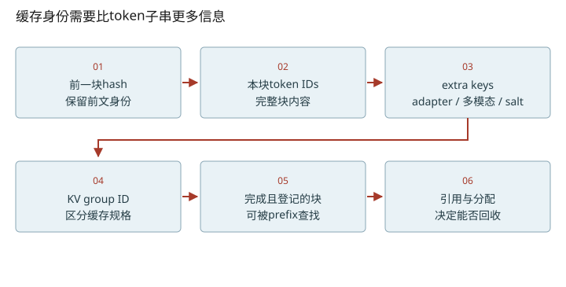
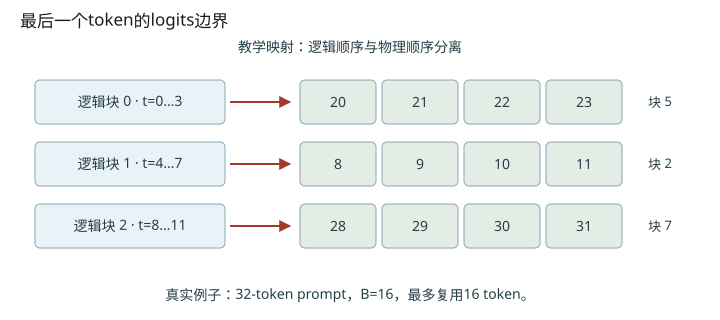

深入篇 28 / vLLM V1 运行时细节 · 2026-11-08
vLLM KV 管理：hash 身份、free队列与淘汰
解释“已算hash”不等于“可共享KV”，并手算一次前缀命中与块池回收。
解释“已算hash”不等于“可共享KV”，并手算一次前缀命中与块池回收。

计算hash和登记可用缓存是两件事
请求创建/输出追加可以预先形成完整块token hash，但设备可能尚未算出KV。只有满足计算完成、缓存组与状态约束的块才能进入可复用前缀。hash链包含前块hash、本块tokens及extra keys；此版本extra keys可涵盖LoRA、多模态标识、cache salt、prompt embeddings。block_pool再区分KV group。异步系统不能用“hash存在”代替“数据已就绪”。
全部prompt见过，也未必全跳过
设标准full-attention单group、B=16、prompt长度32，两块都能匹配历史缓存。常规生成还需要最后位置的hidden/logits，因此get_computed_blocks把最大命中长度限制到31。完整块对齐后只能命中16，剩下16要重算。它不是数学上必须重算整块，而是此路径的块对齐策略。要区分“块可命中”和“本轮实际命中多少”。
free queue 的手工演练
初始free=[U5,C3,C4]，U无hash，C带hash，ref_cnt都为0。请求命中C3并touch后，队列=[U5,C4]、C3.ref_cnt=1；请求释放后C3回队尾，队列=[U5,C4,C3]。分配两个新块得到U5和C4，C4的旧hash被清理，而C3仍能命中。由此看到缓存内容与活跃引用是两个维度。
本版本默认将cached free块放队尾，无hash块放队首优先复用；evict_first等路径能改优先级。用“类似LRU”建立直觉可以，但不能把整个队列当成一条无例外的时间排序。touch、free_blocks与get_new_blocks是观察生命周期的三个小入口。
别把当前可容纳说成永不OOM
full_sequence_must_fit检查当前已知request.num_tokens对应的序列能否容纳，不是提前保证所有未来生成都能一直增长。lookahead、watermark、滑动窗口与多KV group还会影响分配；本课例子刻意限制为一个标准group。端到端系统的容量问题应同时记录token预算、块可用数、prefix hit与抢占次数。

改变变量，验证直觉
启用 JavaScript 后可交互；上面的图和下面的手算练习始终可读。
数值练习：先算，再核对
B=16，prompt长度48，已有三块完整缓存，常规生成需重算最后位置：先算最大可复用token，再按整块对齐。另把free队列例子中释放顺序换掉，判断新分配会覆盖谁。
闭卷检索
不要回看正文。答错后先解释原因，再重新打开这一课。
把结论落到源码
- 找到get_computed_blocks里的last token注释，核对完整块对齐返回值。
- 追touch/free_blocks/get_new_blocks，标出hash索引与free链表分别在何时改变。
以下行号由本地 vendor 文件生成；上游链接固定完整 commit，离线摘录可直接打开。
- vllm-prefix-lookup：vllm/v1/core/kv_cache_manager.py L266–328 · 上游证据
- vllm-hash：vllm/v1/core/kv_cache_utils.py L640–740 · 上游证据
- vllm-block-pool：vllm/v1/core/block_pool.py L681–830 · 上游证据
优先阅读：固定源码 get_computed_blocks、BlockPool。
速查：形状与公式 · 三框架映射 · 术语表 · 复习与实战路线 · 4070 Ti本地实验
只在当前浏览器保存自评；不会自动写成已掌握的 learning record。